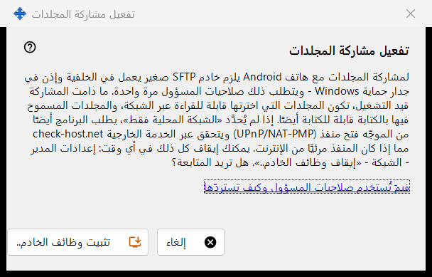
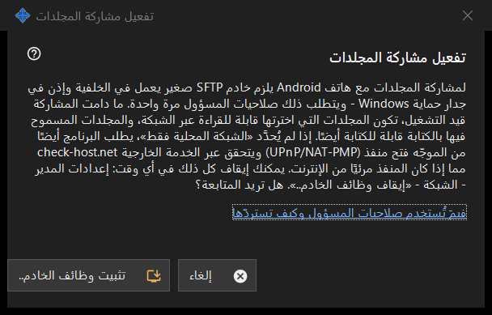

تفعيل مشاركة المجلدات
الغرض من هذه النافذة
تطلب إذناً بتثبيت جانب الخادم من المشاركة: خادم SFTP صغير يعمل في الخلفية واستثناء واحد في جدار حماية Windows. تُفتح من زر تفعيل وظائف الخادم.. في النافذة الرئيسية ومن المعالجات، وتحتاج إلى صلاحيات المسؤول مرة واحدة.


بهذا الترتيب
- اقرأ الشرح.
- اضغط الزر تثبيت وظائف الخادم..
- أكّد طلب المسؤول في Windows.
- انتظر سطر النتيجة؛ وعند النجاح تُبلغ النافذة بأن مشاركة المجلدات مفعّلة.
- اضغط إلغاء للمغادرة دون تغييرات.
عناصر النافذة
ماذا تفعل
تحتاج مشاركة المجلدات مع هاتف Android إلى خادم SFTP صغير في الخلفية وإذن في جدار حماية Windows. أثناء تشغيل المشاركة يمكن قراءة المجلدات المختارة عبر الشبكة، وكتابة ما فُتح منها للكتابة. وما لم يكن خيار الشبكة المحلية فقط محدّداً، يطلب البرنامج أيضاً من الموجّه فتح منفذ (UPnP/NAT-PMP) ويفحص العنوان عبر خدمة خارجية.
النتائج
تم. تم تفعيل مشاركة المجلدات.؛ أو لم يتم تفعيل المشاركة - لم تُمنح صلاحيات المسؤول. عند رفض الطلب (لا يتغير شيء ويمكنك إعادة المحاولة)؛ أو إخفاق في جدار الحماية، يطلب إعادة المحاولة وإرسال السجل من قائمة أيقونة منطقة الإشعارات.
صلاحيات المسؤول وكيفية استعادتها
يشرح الرابط الغرض من استخدام هذه الصلاحيات. للتراجع استخدم إيقاف وظائف الخادم.. في إعدادات المدير: تتوقف المشاركة، وتُفصَل الهواتف المتصلة، ويُزال إذن جدار الحماية. تبقى قائمة المجلدات وكلمة المرور، ويمكن تفعيل كل شيء من جديد.